Overview
I used matching points to line up pairs of photos, squared up objects seen at an angle, and blended overlapping views into mosaics.
A.1: Shoot the Pictures
These are the three pairs I used. Each has enough overlap to pick out the same details in both views.
Bedroom

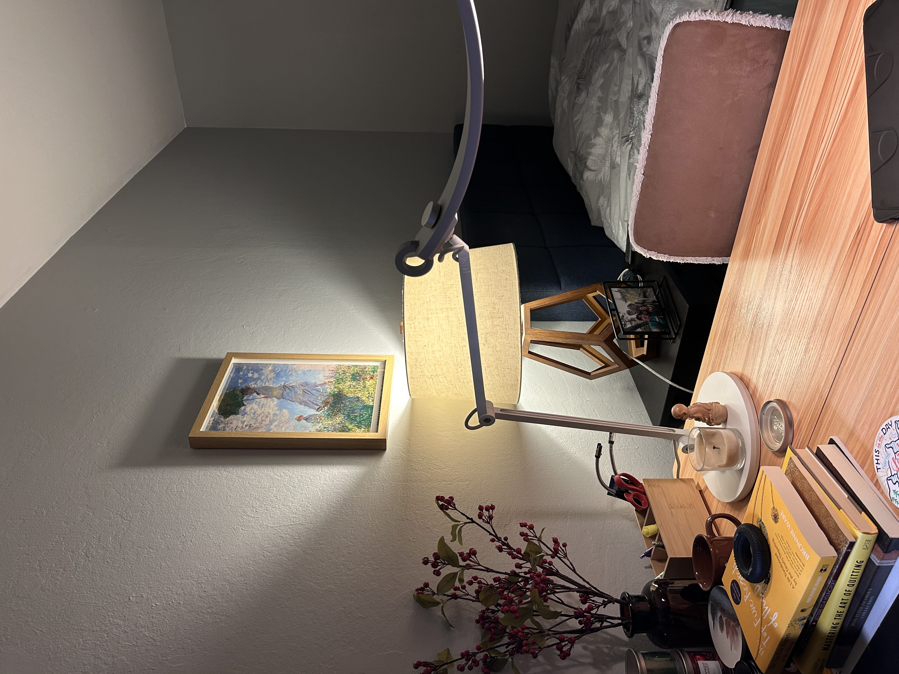

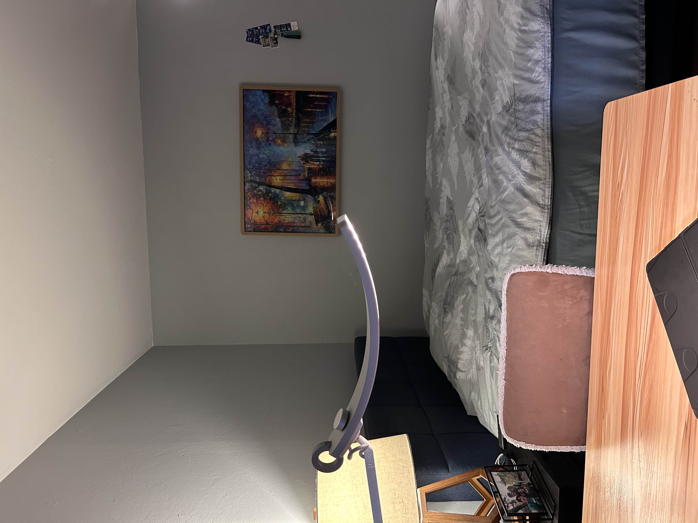
Living room

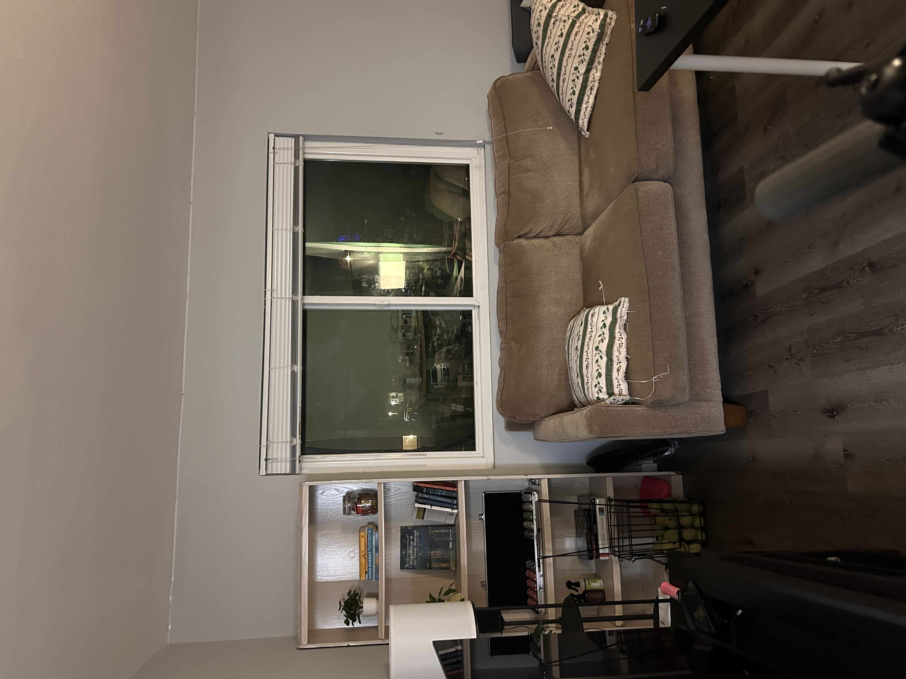

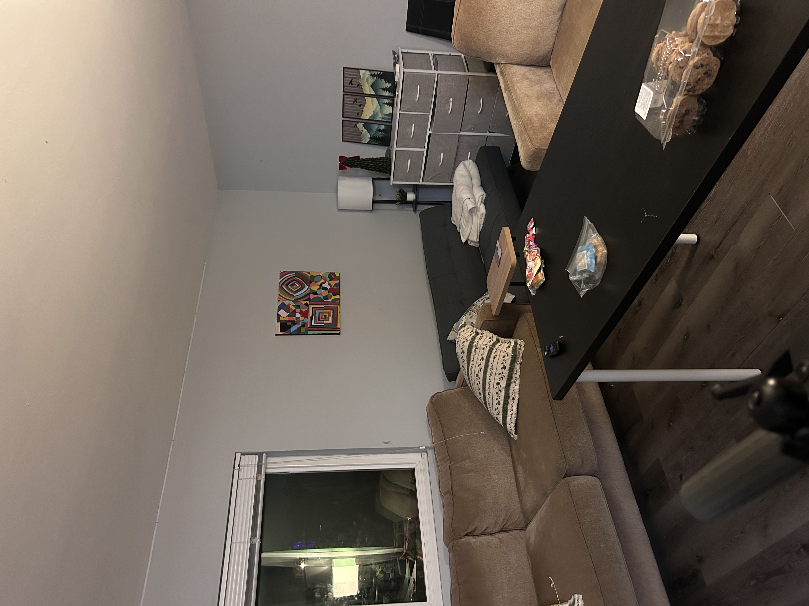
Study room

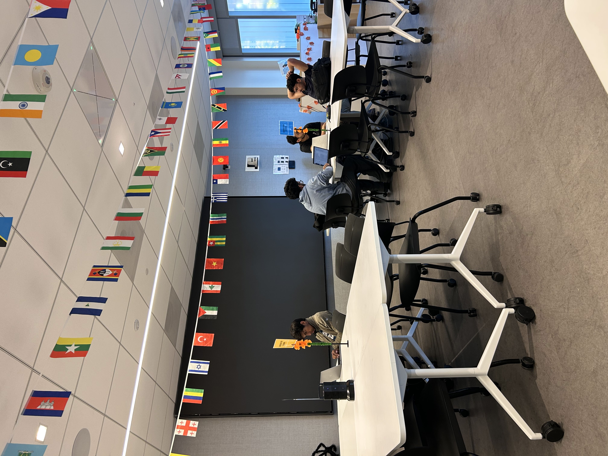

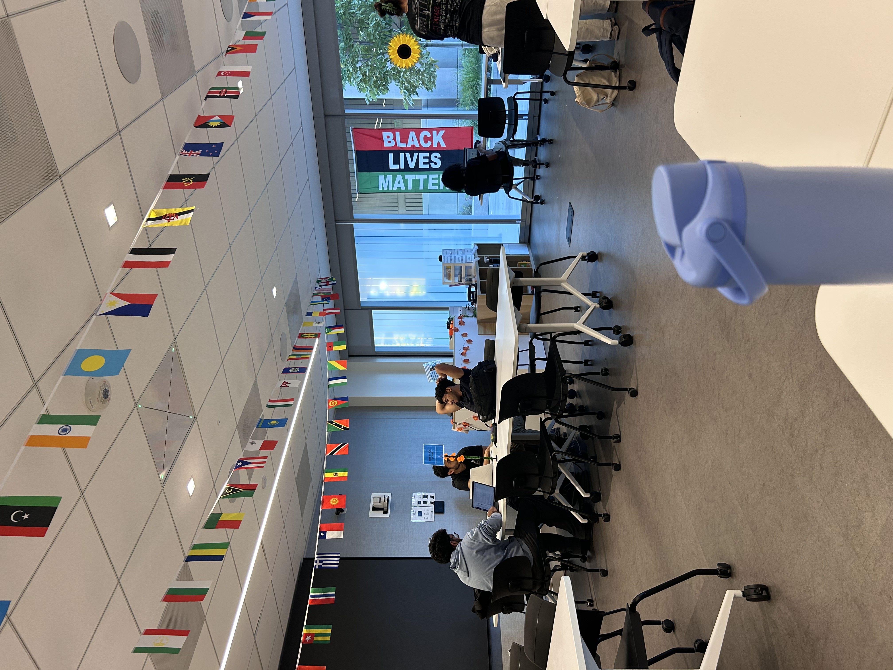
A.2: Recover Homographies
I picked 10 matching points for the bedroom, 7 for the living room, and 8 for the study room. I fixed the last entry of H to 1 and solved the remaining eight entries with np.linalg.lstsq.
Each match (x, y) → (u, v) contributes these two rows to Ah = b:
[ x y 1 0 0 0 −ux −uy ] h = u [ 0 0 0 x y 1 −vx −vy ] h = v h = [h11, h12, h13, h21, h22, h23, h31, h32]ᵀ
Bedroom · 1-1 → 1-2
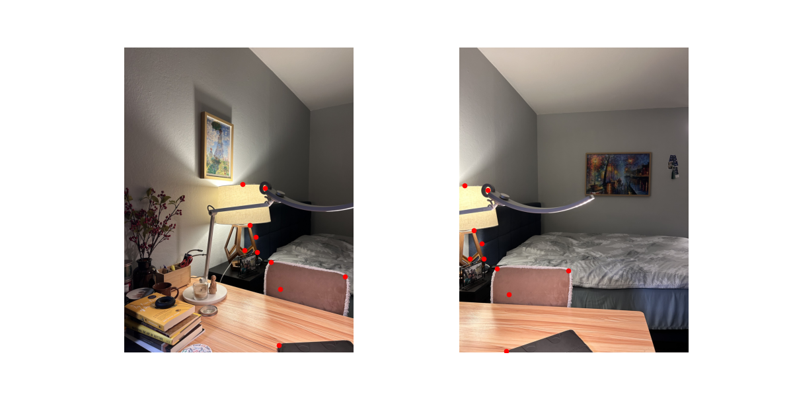
H₁ = [[ 1.29807558e+00 4.40333472e-02 -2.02566865e+03]
[ 7.19510638e-02 1.33892138e+00 -3.75807390e+02]
[ 8.86365421e-05 1.87214850e-05 1.00000000e+00]]
Living room · 2-1 → 2-2
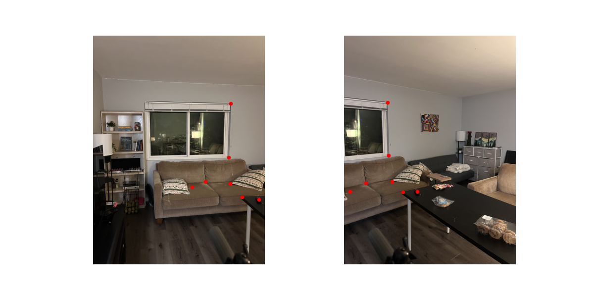
H₂ = [[ 1.84812751e+00 8.32003462e-02 -3.28501843e+03]
[ 4.89079797e-01 1.64528983e+00 -1.16165353e+03]
[ 2.89990407e-04 -8.00275497e-06 1.00000000e+00]]
Study room · 3-2 → 3-1
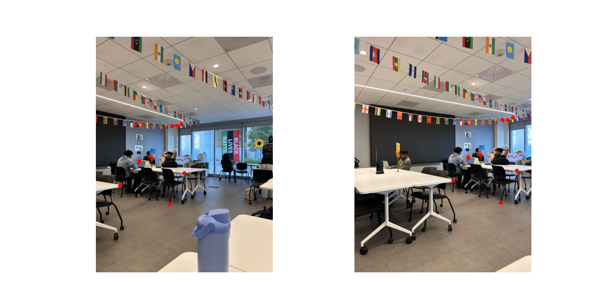
H₃ = [[ 5.40810121e-01 2.15296136e-02 1.29930487e+03]
[-3.17916256e-01 8.61544918e-01 2.55924834e+02]
[-1.50725803e-04 2.33191408e-06 1.00000000e+00]]
A.3: Warp the Images
I implemented both warpers using inverse mapping. The transformed image corners give the output bounds, and each output pixel is mapped back into the source image.
For these two examples, I mapped four corners to a 300×300 square. The crops below focus on the object being squared up; clicking a result opens the full warp.
Poster board


Wolf mural


Both methods straighten the board and mural. Nearest neighbor leaves rougher edges, while bilinear looks smoother but softens small details. Nearest neighbor does less work per pixel; bilinear needs four neighbors and their weights, so the smoother result comes with more computation.
A.4: Blend the Images into a Mosaic
I warped one photo into the other's view and placed both on a shared canvas. In the overlap, I weighted each image by its distance from the edge, then normalized the weights. This gives a gradual transition instead of a hard cut.
Bedroom
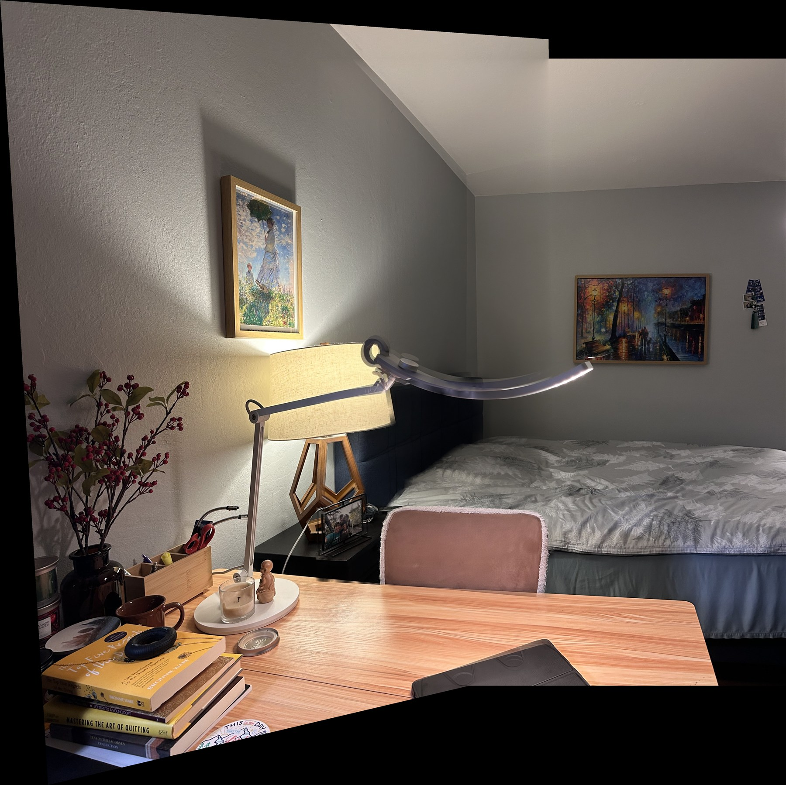
Living room
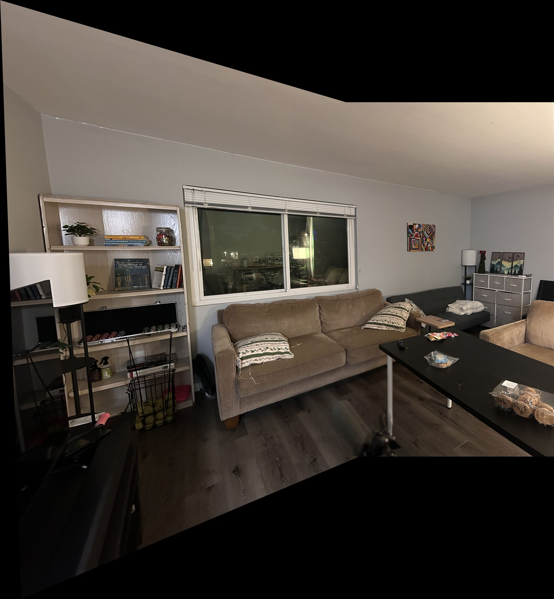
Study room
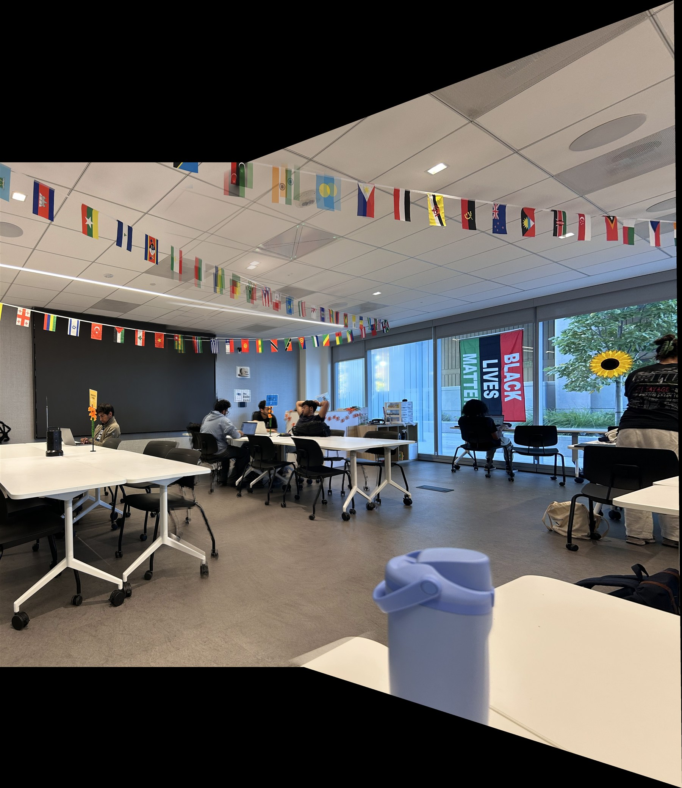